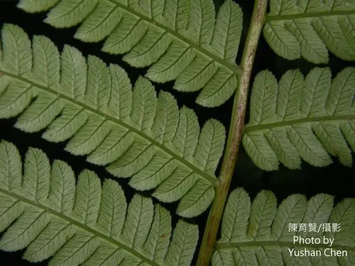

蕨类与裸子植物 · 植物界
桫椤 Alsophila spinulosa

桫椤是现存罕见的树状蕨类，主干高可达 6 m，被称为“蕨类植物之王”，对研究蕨类演化具有重要科学价值。
- 分类
- 门蕨类植物门纲木贼纲目桫椤目科桫椤科属桫椤属
- 栖息环境
- 海拔 300–1800 m 的山谷溪边、林下阴湿处，喜温暖湿润与散射光
- 地理分布
- 中国福建、台湾、广东、广西、贵州、云南等南方省区及东南亚部分国家
- 保护级别
- IUCN 暂无评估；中国国家二级重点保护野生植物
物种志
桫椤是桫椤科的大型树形蕨类，也是现存少数能长成乔木状的蕨类植物。它的主干直立，高可达 6 m，表面密布老叶柄脱落后留下的粗糙疤痕；主干顶端丛生二回羽状复叶，叶长 1–3 m，呈螺旋状排列，幼叶拳卷，展开后如巨伞。叶背沿小脉着生许多球形孢子囊群，成熟时呈褐色。
桫椤喜温暖湿润的亚热带环境，多生长在山谷溪边、林下阴湿处，要求土壤疏松肥沃、空气湿度高。它以孢子繁殖，孢子萌发后先形成原叶体，再发育成幼株，自然更新缓慢。桫椤是侏罗纪恐龙时代遗留的孑遗植物，对研究蕨类系统演化与古气候有重要价值，也是优良的观赏蕨类。由于生境破坏与人为采挖，野生资源日益稀少，被列为中国国家二级重点保护野生植物。
形态与习性
- 株高主干高可达 6 m，直径 10–20 cm
- 叶二回羽状复叶，长 1–3 m，丛生茎顶
- 孢子孢子囊群球形，着生于小脉分叉处
- 生长速度幼株每年仅长高数厘米，成株更慢
- 光照喜半阴散射光，忌强光直射
- 主要用途园林观赏与蕨类演化研究
- 繁殖孢子繁殖，原叶体阶段需高湿环境
趣味知识
- 桫椤与恐龙同处侏罗纪时代，被称作蕨类植物中的“活化石”。
- 茎干上的疤痕是老叶柄脱落后留下的，可以粗略判断植株年龄。
- 幼叶拳卷如蜗牛壳，是蕨类植物典型的“拳卷叶”。
- 野生桫椤生长极慢，从孢子萌发到长成小树往往需要多年。